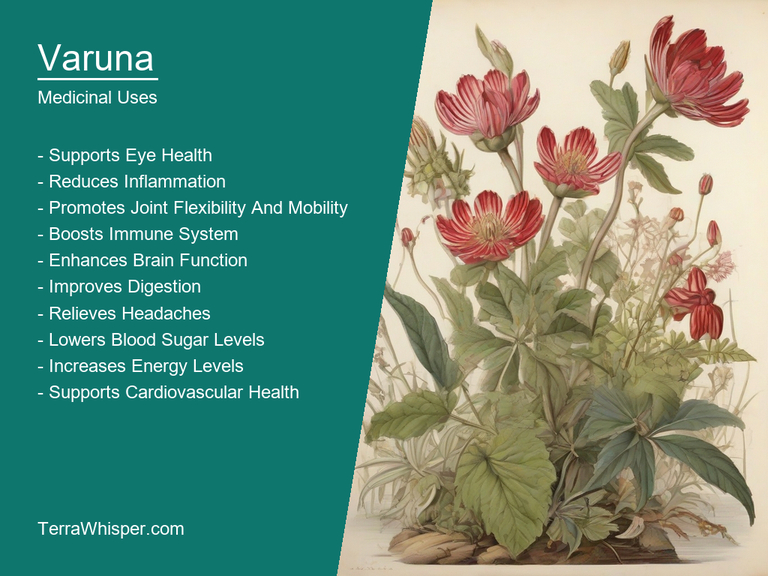
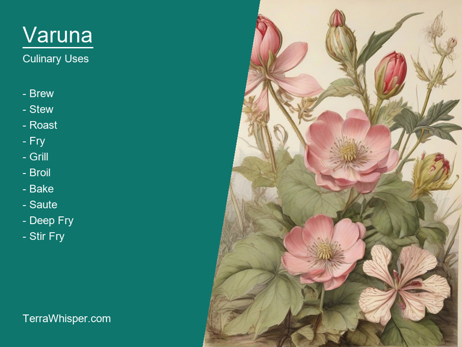
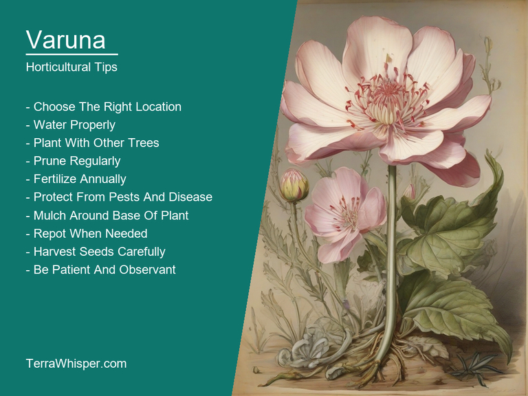
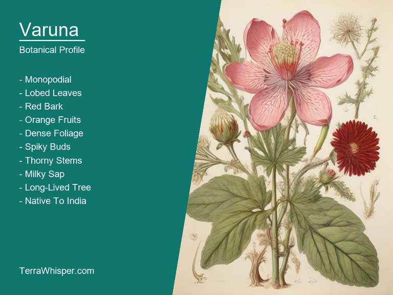
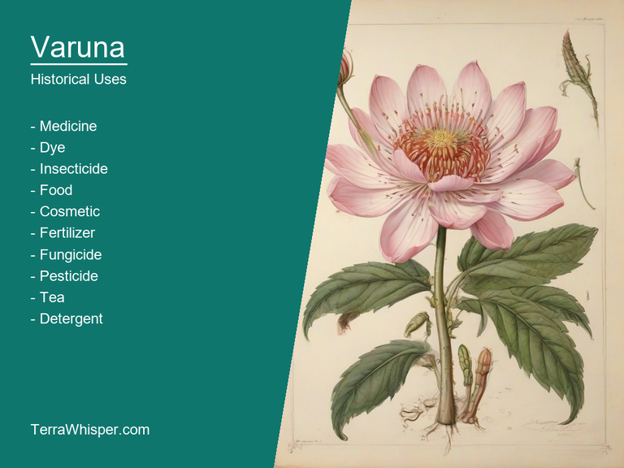

What To Know Before Using Varuna (Crataeva Nurvula)

Varuna, scientifically known as Crataeva nurvula, is a versatile and fascinating plant that has been utilized for its numerous uses over centuries. Among the key highlights are its medicinal and culinary applications. This plant's roots have a range of medicinal properties which make them highly beneficial in treating various health issues. They can be used to cure urinary tract infections, fever, stomach ulcers, digestive problems, and respiratory disorders. Furthermore, the leaves and barks are known for their antimicrobial properties, making them a potential alternative remedy against certain bacterial and fungal infections.
In addition to its medicinal uses, Varuna is widely valued as a culinary ingredient in various parts of Asia and beyond. The leaves and tender shoots are often used as vegetables in stir-fried or steamed dishes. They have a mild and refreshing taste that complements the flavors of other ingredients. Moreover, the flowers of this plant can also be cooked as a vegetable, giving them an aromatic touch to the recipe due to their pleasant fragrance. As such, Varuna's culinary applications showcase its value not only as a medicinal herb but also as a tasty and nutritious food.
Apart from these notable qualities, Varuna has earned admiration for its ornamental and horticultural worth in landscaping and gardening. Its large and fragrant flowers are attractive and have been employed as an important component of many floral arrangements. The plant's ability to grow well under different soil and climatic conditions makes it a popular choice for gardeners seeking plants with robust characteristics that can adapt to diverse environments. Moreover, its appealing aesthetics and ease of cultivation have contributed towards enriching gardens worldwide with this versatile plant.
With regards to the botanical aspects of Varuna, Crataeva nurvula belongs to the family of Cevallariaceae, which is a unique classification in the plant kingdom. Its native habitat ranges across Southeast Asia and parts of Northern Australia. The plant's medicinal properties have been known for centuries and are an essential part of traditional herbal medicine systems in many Asian countries. Throughout its long history, Varuna has proved itself as a valuable plant with diverse applications that continue to fascinate botanists and gardeners alike.
In this article, you will discover what are the medicinal and culinary uses of varuna. Then, you'll learn how to cultivate it, what is its botanical profile, and how it was used historically.
What Are The Medicinal Uses Of Varuna?
Varuna (Crataeva nurvula) has many health benefits, such as treating inflammation, diarrhea, and dysentery by boosting the immune system. It also helps in relieving respiratory conditions like bronchitis and asthma, along with providing relief from coughs due to their expectorant properties. Varuna is used to soothe indigestion, flatulence, gastric disorders, ulcers, liver issues, skin conditions, and even menstrual cramps. The plant also acts as an aphrodisiac, which helps increase sexual health, improving fertility in both men and women by boosting libido.
The following illustration lists the most important uses of varuna in medicine.

Varuna is known to contain several medicinal constituents including saponins, alkaloids, glycosides, flavonoids, tannins, triterpenes, and sterols. These chemical compounds give Varuna its therapeutic properties that help with a variety of health issues.
The most commonly used parts of the plant for medicinal purposes are its leaves, roots, and bark. Varuna can be used in different ways like consuming it as a decoction or infusion, applying an ointment on the skin, or using it in enemas. The traditional medicine practices suggest incorporating these herbal remedies into various Ayurvedic concoctions to enhance their effectiveness and address specific health concerns more accurately.
Although Varuna has numerous benefits, there are some potential side effects to consider. Over-consumption or misuse of the plant can lead to gastrointestinal issues like constipation, nausea, and vomiting. It may also cause allergic reactions in people with a sensitivity to plants belonging to the same family as Varuna (Capparidaceae). Pregnant women should avoid using this herb due to its uterine stimulant properties that could potentially induce miscarriage or labor.
To ensure safe and effective use of Varuna, it is essential to follow certain precautions. Consult with a healthcare professional before incorporating any new herbal remedy into your health routine. They can guide you on the appropriate dosage based on your specific health condition and provide advice on potential drug interactions or contraindications. Additionally, pay attention to any unusual side effects that may arise during treatment and report them to your doctor if they persist. Lastly, use high-quality, organic products sourced from reliable vendors for optimal results.
What Are The Culinary Uses Of Varuna?
The culinary aspects of Varuna (Crataeva nurvala), also known as Kusum or Bilva, mainly revolve around its unique flavors and nutritional components used in various Indian cuisines. This plant is not solely regarded as a medicinal herb but its tasteful properties make it a vital ingredient in several dishes.
The following illustration lists the most common uses of varuna for culinary purposes.

The flavor profile of Varuna is quite distinct, with a combination of sweetness, sourness, bitterness, and slight astringency, which makes it suitable for adding unique depths to diverse recipes. The fruit pulp, flowers, and leaves are used widely, bringing forth an intriguing taste experience.
The edible parts of Varuna that find their way into culinary preparations include the tender shoots, young leaves, and flowers. These ingredients provide a myriad of health benefits such as being rich in vitamins, minerals, fiber, antioxidants, and essential amino acids. They're believed to boost digestion, improve immunity, and aid in weight loss management when incorporated into the diet.
Regarding culinary tips for using Varuna in dishes, it's advisable not to overcook it since the delicate flavors may be lost in high temperatures. Instead, it can be added as a fresh garnish or slightly-sautéed ingredient for enhanced flavor. This plant-based spice is often combined with other Indian staples such as turmeric, coriander, and cumin to create vibrant blends, reflecting its versatility in enhancing recipes from various cuisines.
Although the plant offers a wealth of nutritional benefits, it's essential to be cautious about potential side effects and toxicity before incorporating Varuna into your diet. While the edible parts are generally safe for consumption, overconsumption can lead to stomach ailments due to its laxative effect. Additionally, there could be possible allergic reactions in certain individuals who may have not yet encountered this plant-based ingredient in their meals.
How To Cultivate Varuna In Your Garden?
The growth requirements of Varuna (Crataeva nurvula) include a well-draining and rich soil with a slightly acidic to neutral pH level, ranging from 5.0 to 7.5. It thrives in areas that receive partial sunlight to full sun exposure throughout the day and a moderate amount of water during its growing season.
The following illustration lists the most important tips to cutlitvate varuna.

When planting Varuna, first ensure you dig a hole twice as wide but similar depth to the root ball. Add compost or well-rotted manure to the soil for added nutrition, then place the plant in the center and backfill with soil. Gently firm the soil around it while ensuring not to damage the roots. Water immediately after planting and apply a layer of mulch to retain moisture and regulate temperature.
Regular care tips include watering during dry periods, but avoid excessive saturation that can lead to root rot. Prune to maintain shape and encourage new growth. Fertilize once or twice a year using an appropriate organic fertilizer. Apply a balanced slow-release fertilizer in spring and a nitrogen-rich one in summer for optimal results.
Harvesting tips involve collecting the flowers when they are fully open, which usually occurs from midsummer to early fall. Pick them before they start to wilt or show any signs of disease. Collect seedpods when they become brown and dry, typically in late summer or autumn. To harvest seeds, place these pods on a tray for a few days until the seeds are easily removed.
Varuna is susceptible to various pests and diseases. Common pest attacks come from aphids, which can be dealt with using an insecticidal soap or neem oil spray. Fungal diseases like powdery mildew may occur during humid conditions; apply a fungicide for prevention and treatment. Additionally, keep an eye out for any signs of wilt or leaf spot to ensure a healthy Varuna plant.
What Is The Botanical Profile Of Varuna?
Varuna, with botanical name Crataeva nurvula, belongs to the domain Eukaryota, kingdom Plantae, phylum Magnoliophyta, class Magnoliopsida, order Malvales, family Malvaceae, genus Crataeva, and species nurvula. Common names for this plant include Varuna Tree and Indian Corkwood.
The following illustration display the botanical profile of varuna.

This tree exhibits different variants with slight differences in appearance. One such example is Crataeva sphaerocarpa, which features rounded fruits instead of the usual oval ones found in typical varieties. Another variant, Crataeva roxburghii, is often known as Custard Apple Tree or Dang due to its yellow fruits.
Morphologically, Varuna/Crataeva nurvula is a large shrub or small tree with a distinctive spreading crown and an erect trunk that grows up to 15 meters tall. The leaves are broadly ovate, glossy green, and have serrated margins. Flowers appear in clusters of yellow-greenish color during the blooming season. The fruits are oval or rounded with a fleshy outer covering that becomes hard when dry, resembling cork. This corky shell helps the seeds to disperse by floating on water bodies.
Geographically, Varuna/Crataeva nurvula is native to India and can be found in different regions across the country, such as Gujarat, Uttar Pradesh, Maharashtra, Punjab, Himachal Pradesh, Uttarakhand, West Bengal, Assam, Karnataka, Kerala, Rajasthan, Madhya Pradesh, and Bihar. It can also be found in other parts of Asia, including Nepal, Pakistan, Bangladesh, Myanmar, Thailand, Laos, and Sri Lanka.
The life-cycle of Varuna/Crataeva nurvula begins with seed germination followed by growth through various stages such as juvenile, adult, and senescent phases. It is a perennial plant that can live for many years, depending on its surrounding conditions and local environment.
What Are The Historical Uses Of Varuna?
Varuna (Crataeva nurvula), a deciduous shrub native to India and other countries across South Asia, has been an integral part of traditional medicine for centuries. It is used for its various healing properties in Ayurveda, the ancient system of holistic medicine originating from India. This medicinal plant, known for its numerous health benefits, has been a staple in treating various ailments such as digestive issues, skin problems, and respiratory disorders.
The following illustration lists the most well known historical uses of varuna.

Besides its use in traditional medicine, Varuna has also found its way into practices involving divination. Divination refers to the art of seeking knowledge through the interpretation of signs or omens, often using natural elements like plants, stones, animals, or even astrological events. In ancient Indian societies, the leaves and flowers of the Crataeva nurvula plant have been employed for their unique properties in this context. It was believed that by carefully examining these parts of the plant, one could gain insight into the future or predict the outcome of a situation.
Legends surrounding Varuna (Crataeva nurvula) are also abundant within traditional folklores and beliefs in various South Asian countries. One such legend is about its association with Rati - the goddess of love, beauty, and desire. According to this story, Rati was so enamored by the plant's delicate blooms that she decided to adorn herself with them. As a result, her divine essence infused into the flowers, bestowing upon them their unique properties.
Another legend tells of Varuna's connection to Lord Ganesha, the Hindu god of wisdom and learning, known as the remover of obstacles. It is said that when Ganesha was born, this holy shrub bloomed in abundance at his birthplace. In addition to symbolizing fertility and growth, it also represents the overcoming of challenges and adversities - an apt metaphor for Lord Ganesha's divine abilities.
Conclusively, Varuna (Crataeva nurvula) has played a significant role in various aspects of South Asian culture, from traditional medicine to divination practices and even in folklores. With its rich history and deep-rooted connection to ancient beliefs, this humble plant continues to remain a symbol of wisdom, resilience, and the enduring strength of nature's healing powers.